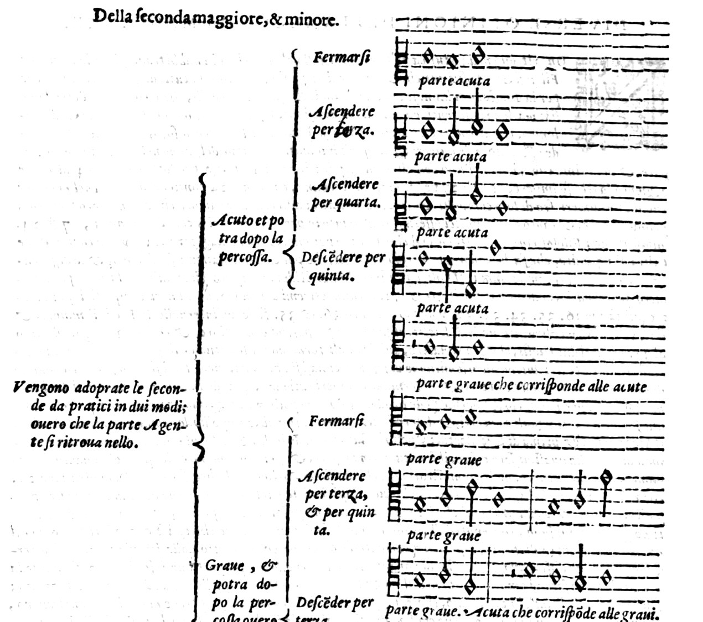

Universität Tübingen · WiSe 2026/27
2. Sitzung // 28.10.2026 // Niels Pfeffer
Stil „Machaut“
Stil „Landini“
Stil „Palestrina“
„[…] chiamerò quella parte, che stà & riceve la percossa Patiente. Perche patisce quella cosi fatta percossa; & quella parte, che offende l'altra, & è quella, che opera e fa la Dissonanza Agente.“
[…] nenne ich die Stimme, die stillsteht und den Schlag empfängt, Patiente, weil sie diesen Schlag erleidet; und die Stimme, welche die andere verletzt und die Dissonanz hervorbringt, Agente.
„Quella parte, la quale nelle Dissonanze sarà patiente, sempre doppò la percossa hauta, descenderà per un grado, sia poi di Tuono, ò Semituono. Vada poi la parte agente ovunque più le piace, pur che doppò tal offesa si incontrino in una consonanza […].“
Die Stimme, die bei den Dissonanzen Patiente ist, steigt nach dem empfangenen Schlag immer um eine Stufe ab, sei es um einen Ganz- oder einen Halbton. Die Agente mag dann gehen, wohin es ihr beliebt, sofern sich die Stimmen nach dieser Verletzung in einer Konsonanz treffen […].
Giovanni Maria Artusi, Seconda parte dell'arte del contraponto, Venedig 1589, S. 27, 28 und 30. Text und Notenbeispiel nach der Transkription im Thesaurus Musicarum Italicarum (Universität Utrecht).
Regolatamente ogni volta che
Regelgerecht [werden sie gebraucht], wann immer sie
con debiti modi, & ordini vengono posti dal Compositore, di maniera che l'vdito ne resta sodisfatto, & se ne
auf gehörige Weise und in gehöriger Ordnung vom Komponisten gesetzt werden, so dass das Ohr befriedigt ist und sich
contenta, ma perche in questo ordine, e necessario, che vno stia ne si moui & quasi sospeso, anzi perso resti,
zufriedengibt. Weil es aber in dieser Ordnung nötig ist, dass die eine [Stimme] stillsteht, sich nicht bewegt und gleichsam schwebend, ja verloren verharrt,
e l'altro con viuacità hor quà hor là secondo la volontà dell'Artefice percuota di modo, che in quella percossa
und die andere lebhaft, bald hier, bald dort, nach dem Willen des Künstlers so anschlägt, dass bei diesem Schlag
l'vdito ne venga alquanto offeso, se bene dipoi ne piglia piacere, però chiamerò quella parte che stà, & riceue
das Ohr etwas verletzt wird, auch wenn es danach Gefallen daran findet, nenne ich die Stimme, die stillsteht und
la percossa: Patiente, & quella che offende l'altra mouendosi, ò stando, Agente, Quella parte, lasciando tut-
den Schlag empfängt, Patiente, und die, welche die andere verletzt, indem sie sich bewegt oder stillsteht, Agente. Die Stimme, alle
te l'altre regole da vna parte, che sarà patiente, sempre doppo la percossa hauuta discenderà per vn grado sia
anderen Regeln beiseite, die Patiente ist, steigt nach dem empfangenen Schlag immer um eine Stufe ab, sei es
poi di tuono ò di semituono, che non importa: Vada poi la parte Agente ouunque piu le piace, purche dop-
um einen Ganz- oder einen Halbton, das ist gleich. Die Agente mag dann gehen, wohin es ihr beliebt, sofern sich die Stimmen
po tal offesa s'incontrino in vna Consonanza, che tal'hora potrà essere imperfetta, tal'hora perfetta: & forsi
nach dieser Verletzung in einer Konsonanz treffen, die bald unvollkommen, bald vollkommen sein kann, und vielleicht,
anzi senza forsi, in vn'altra Dissonanza, come si vedrà, secondo la dispositione delle parti.
ja ohne vielleicht, in einer anderen Dissonanz, wie man je nach der Anordnung der Stimmen sehen wird.
Giovanni Maria Artusi, L'arte del contraponto, Venedig 1598 (erweiterte Neuausgabe beider Teile), S. 40, nach dem Exemplar München, Bayerische Staatsbibliothek, 2 Mus.th. 24. Zeilen wie im Druck, ſ als s, Abkürzungen aufgelöst.

Von der großen und kleinen Sekunde.
Die Praktiker gebrauchen die Sekunden auf zweierlei Weise: Die Agente steht entweder
Giovanni Maria Artusi, L'arte del contraponto, Venedig 1598, S. 41 (Ausschnitt). München, Bayerische Staatsbibliothek, 2 Mus.th. 24.